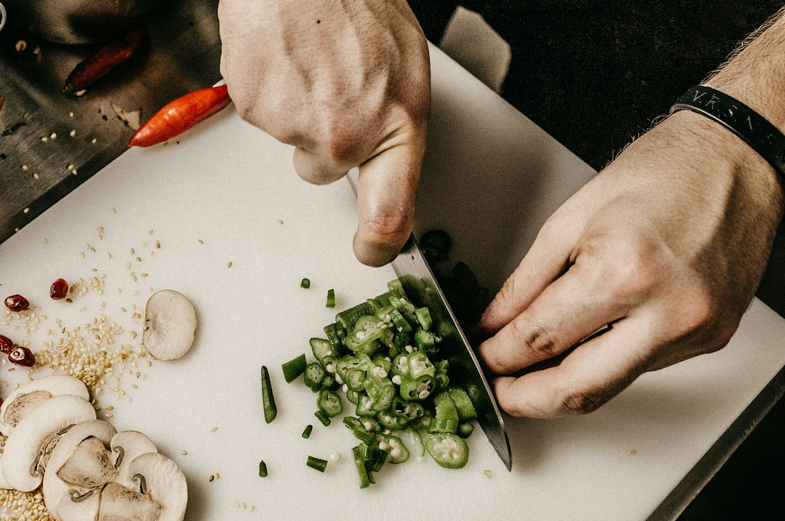
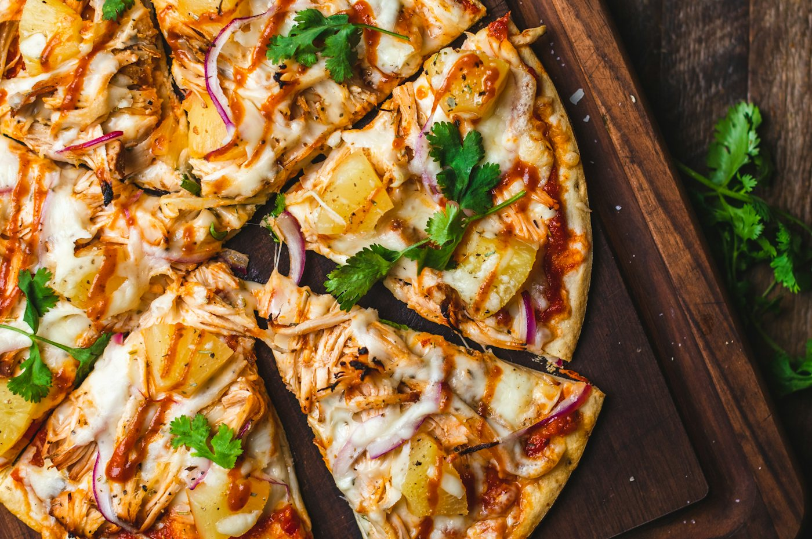

Cinquenta anos servindo massa fresca na mesma esquina.
Reservas pelo WhatsApp, manobrista no almoço e no jantar e salão reservado para grupos de até quarenta pessoas.
Além do salão, a cozinha atende eventos, encomendas e entregas no bairro. A cozinha e o salão são tocados pela família, com uma equipe que está na casa há mais de dez anos.
Paola FerraroChef e sócia


❦
Cardápio
Os pratos servem bem uma pessoa. Meia porção disponível para as massas.
Entradas
- Bruschetta al pomodoroR$ 32
Pão da casa tostado, tomate, alho e manjericão
- Burrata com tomate assadoR$ 58
Azeite extravirgem, flor de sal e pão de fermentação natural
- Polpette al sugoR$ 44
Almôndegas de carne e pecorino ao molho de tomate
- CarpaccioR$ 52
Lâminas de filé, rúcula, alcaparras e parmesão
Pratos da casa
- Tagliatelle al ragùR$ 74
Ragu de cinco horas, receita da fundadora
- Ravioli de ricota e espinafreR$ 72
Na manteiga de sálvia com nozes tostadas
- Lasanha à bolonhesaR$ 78
Sete camadas, bechamel e parmesão de 24 meses
- Galeto ao limãoR$ 84
Assado na brasa, com polenta cremosa
Sobremesas
- TiramisùR$ 34
Receita de 1974
- Panna cottaR$ 30
Com calda de frutas vermelhas
- Cannoli sicilianiR$ 32
Ricota doce, laranja cristalizada e pistache
Valores em reais. Couvert opcional R$ 18 por pessoa. Taxa de serviço de 10% não obrigatória.
Horários
| Terça a sexta | 12h–15h · 19h–23h |
|---|---|
| Sábado | 12h–24h |
| Domingo | 12h–17h |
Onde estamos
Rua Treze de Maio, 1.208 — Bela Vista, São Paulo
Manobrista no almoço e no jantar.
Aceitamos todos os cartões e vale-refeição.

Reserve a sua mesa pelo WhatsApp
Respondemos em poucos minutos. Para grupos acima de dez pessoas, fale com a gente com dois dias de antecedência.